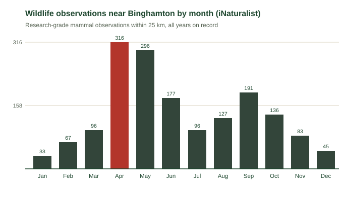
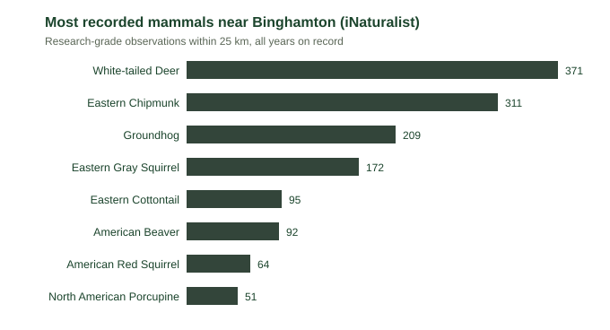
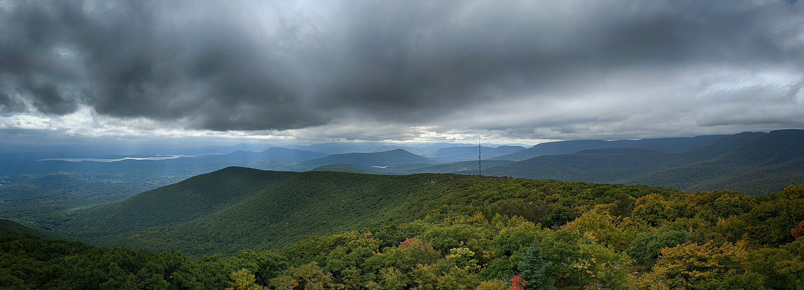

Raccoons along the river corridor
The confluence gives raccoons food, water and travel routes through Binghamton neighborhoods. They follow the rivers, raid trash, then den in attics and chimneys of older homes on the West Side and South Side.
Broome County / Upstate New York
Animals in the attic, chimney or under the porch in Binghamton? They are evicted humanely, entry points sealed. No poison. Prices published first.
Request an inspectionBinghamton sits where the Susquehanna and Chenango rivers meet, and that river corridor : plus an aging housing stock with plenty of worn soffits and brick chimneys : keeps wildlife pressure high year-round. Raccoons work the riverbanks at night and den in attics by day. Humane removal and sealing the building, not just trapping one animal, is what solves it.
Binghamton sits in Broome County: older housing stock on both sides of the rivers.
The animals removed most often in Binghamton are raccoons, bats, grey and flying squirrels, skunks, opossums and groundhogs, plus mice in attics and birds in chimneys or vents. Broome County homes near woods and water see the full list. The inspection identifies yours first, because method differs by species. Porch and ground animals are often handled on the same visit.
Sound and hour together name the animal in most Binghamton homes. Heavy thumping after dark points to a raccoon. Scratching at dawn fits grey squirrels. Light pitter patter after dark fits flying squirrels or mice, and fluttering at dusk fits bats. An inspection confirms it with droppings, tracks and the entry point.
Calls spread across the First Ward, the West Side and East Side, the North Side and the Southside, in ZIPs 13901, 13903, 13904 and 13905. The two interstates, I-81 and I-86, cross at the city, and most in-town work sits off Court Street, Front Street and the Brandywine Highway (NY-7). Homes near Ross Park Zoo and Recreation Park sit close to the wooded hills that ring the valley floor. Snow runs from November into April here, and in wet springs high river water pushes bank animals toward drier ground, which is often a basement or crawl space.
What lives around Binghamton is not a matter of opinion. Observers have logged 1,663 research-grade mammal records within 25 km on iNaturalist, peaking in April at 316 records in that month alone.
Of the animals this service handles, squirrels show up most in the Binghamton record, 237 times over. The rest of the ranking runs groundhogs (209), raccoons (41), striped skunks (31), Virginia opossums (16), bats (9), mice, rats and voles (6) and chimney swifts (3).
Bat records look small in every town here, and Binghamton is no exception at 9: bats fly at dusk and roost out of sight, so counts understate them.


For scale: 47,151 residents and 25,457 housing units in Binghamton (US Census, ACS 2024). Every chimney and crawl space in that stock is potential den space in winter. Open-Meteo records average 28.5°F in January and 72.3°F in July here, and February is the snowiest month. The cold half of the year is when attic tenants settle in and stay. GBIF adds another 1,832 mammal occurrence records for the area around Binghamton.


The Binghamton wildlife calendar turns this record into a month by month guide, including when bat work can and cannot happen.
Data: iNaturalist research-grade observations (25 km radius), GBIF, US Census ACS 2024, Open-Meteo — fetched November 2026.
The confluence gives raccoons food, water and travel routes through Binghamton neighborhoods. They follow the rivers, raid trash, then den in attics and chimneys of older homes on the West Side and South Side.
Binghamton's older porches and raised foundations are classic skunk den sites. A skunk family under a porch in spring means odor problems and a real risk to pets until the den is cleared and screened off.
Opossums wander up from the riverbanks into crawl spaces, garages and under sheds. They are generally docile but will nest in insulation and attract other pests, and they should be relocated humanely rather than harmed : they eat large numbers of ticks.
Many Binghamton homes date to the early 1900s, with ridge gaps and loose flashing that bats exploit. Colonies in these attics grow season over season and are common near the tree-lined riverbanks.
Keep people and pets out of the attic and do not block the hole you think the raccoon used, because kits may be inside. Note when the noise starts and where it is loudest, since that detail speeds up the inspection. Then book an inspection in Binghamton. A spring raccoon in an attic almost always means a mother with young.
Yes, humane methods are the standard in Binghamton. Animals leave through one-way doors or are live caught with low stress handling. Poison, glue boards and lethal traps are not used. Young are reunited with their mother outside before the seal goes on. You can ask which device will be used before anyone starts work.
Start with sound and timing: a noise at 2 a.m. rules out grey squirrels, daytime animals, and a noise at breakfast rules out raccoons.

| Sound | When | Likely animal | What it means |
|---|---|---|---|
| Heavy thumping, slow walking | After dark | Raccoon | Spring noise often means kits too. |
| Scratching, nuts rolling | Dawn and late afternoon | Grey squirrel | Check eaves and soffits. |
| Light pitter patter, very fast | After dark only | Flying squirrel or mice | Droppings size settles which one. |
| Fluttering, faint scratching | Dusk and dawn | Bats | Look for guano below a roofline gap. |
| Gnawing that stops and starts | Night, in walls | Mice or rats | Fixed paths. Wiring is the risk. |
| Chattering, crying young | Night, spring | Raccoon family | Do not seal. Young check first. |
Order matters. Seal too early and an animal can be trapped in a wall. Skip the seal and the next animal uses the same hole.

Attic, roofline and foundation checked, entry points photographed. Written scope and price first.
One-way doors let animals leave and not return; ground animals are live caught. No poison.
Every gap closed with chew-proof metal, mesh or flashing. Chimneys capped, vents screened.
Droppings come out, the space disinfected, damaged insulation flagged.
No poison is used for attic wildlife in Binghamton. Poisoned animals die in wall voids, where they smell for weeks and draw flies. Humane eviction with one-way doors, followed by sealing, removes the animal and closes the route it used to get in. Ask any operator who suggests poison how a dead animal leaves the wall.
Entry points are sealed on every job in Binghamton, because removal alone does not last. The animal used a gap at the roofline, a vent or the foundation, and the next animal will find it. Sealing with chew-proof materials ends the cycle. Ask for the seal list in writing before work starts.
Timing is law for bats in New York: exclusion pauses in two blackout windows, May 1 to August 15, when flightless pups are in the roost, and October 1 to March 31, when colonies hibernate. Raccoon kits arrive March to June, so spring jobs start with a young check.

Bats cannot be excluded in Binghamton during the New York blackout windows, May 1 to August 15 and October 1 to March 31. Flightless pups cannot leave, and sealing them in is cruel and against state guidance. Inspections still run, and exclusion is booked for the day the window opens.
| Service | Typical range | What it covers |
|---|---|---|
| Inspection and entry point survey | $150-$300 | Roofline, attic and foundation checked. Often credited toward the work when you go ahead. |
| Single animal humane removal | $300-$600 | One animal, a clear entry point, normal access. |
| Bat exclusion, full home | $800-$2,500 | One-way valves, full seal, guano check. Colony size drives the range. |
| Attic cleanup and disinfection | Quoted after inspection | Depends on droppings volume and insulation condition. |
Binghamton costs are generally at the moderate end of New York ranges, though larger older homes with multiple roof gaps can push exclusion work higher.
Roof access, entry points, and young or droppings move a quote most. The scope comes in writing after inspection.
Wildlife removal in Binghamton most often starts with a $150-$300 inspection, and a single animal removal usually runs $300-$600. Bat exclusion for a full home runs $800-$2,500, while attic cleanup is quoted after inspection. Access, entry points, young and contamination move the final price. The inspection fee is often credited toward the work when you go ahead.
Yes, cleanup is offered after removal and sealing in Binghamton, and it is quoted after inspection. Bat guano and raccoon droppings are removed with protective gear, the space is disinfected, and soiled insulation is flagged. Heavy contamination should never be swept up dry by a homeowner. The quote lists removal, disinfection and insulation work as separate lines.
Most attic animals in Binghamton do not leave on their own, because the attic gives them warmth, shelter and safety for young. Squirrels return to the same dens, and bat colonies to the same roost each year. Eviction plus sealing changes the pattern. It also protects the next owner or tenant, because the den site is closed for good.
Animals rarely need a big hole: bats pass a 3/8 inch gap, mice a quarter inch.

Attics and chimneys. Loud, hard on insulation.
Raccoon removal guide. In this town.Attic colonies and guano. NY blackout dates set the timing.
Bat removal guide. In this town.Eaves, soffits and chewed wiring. Daytime animals.
Squirrel removal guide. In this town.Porch and deck dens. Calm handling lowers spray risk.
Skunk removal guide.Burrows under sheds. Gardens take damage too.
Groundhog removal guide.Crawl spaces and garages. Quiet and shy.
Opossum removal guide.Light night scurrying. Sealing beats traps.
Mice in the attic removal guide.Nests in flues and vents. Caps stop repeats.
Birds in the chimney removal guide.This site is a matching service for wildlife removal and wildlife control in Binghamton: your request goes to a local licensed operator in Broome County. Run the verify page checks (licence, insurance, written scope, seal in the price) first.
Wildlife work in New York should be done by a licensed nuisance wildlife control operator, called an NWCO. Ask for the licence, insurance, and who does the work. This site matches you with local operators, and the verify page lists the checks. A real operator shows the licence without being asked twice.
Yes. Humane skunk removal uses careful live trapping and low-stress handling so the animal is relocated without spraying in most cases. After removal, the porch opening is screened with buried hardware cloth so another skunk cannot dig back in.
Tell us what you are hearing or seeing, and when it started. Sound and timing notes help identify the animal. You get a callback and a written scope before work begins.
Draft note: form endpoint and call tracking number are added at launch. No number is published here.
Not sure what animal you have? Start with What is in my attic? or the attic noises guide.
Wildlife removal in Binghamton most often starts with a $150-$300 inspection, and a single animal removal usually runs $300-$600. Bat exclusion for a full home runs $800-$2,500, while attic cleanup is quoted after inspection. Access, entry points, young and contamination move the final price. The inspection fee is often credited toward the work when you go ahead.
No poison is used for attic wildlife in Binghamton. Poisoned animals die in wall voids, where they smell for weeks and draw flies. Humane eviction with one-way doors, followed by sealing, removes the animal and closes the route it used to get in. Ask any operator who suggests poison how a dead animal leaves the wall.
Entry points are sealed on every job in Binghamton, because removal alone does not last. The animal used a gap at the roofline, a vent or the foundation, and the next animal will find it. Sealing with chew-proof materials ends the cycle. Ask for the seal list in writing before work starts.
Yes, cleanup is offered after removal and sealing in Binghamton, and it is quoted after inspection. Bat guano and raccoon droppings are removed with protective gear, the space is disinfected, and soiled insulation is flagged. Heavy contamination should never be swept up dry by a homeowner. The quote lists removal, disinfection and insulation work as separate lines.
Wildlife work in New York should be done by a licensed nuisance wildlife control operator, called an NWCO. Ask for the licence, insurance, and who does the work. This site matches you with local operators, and the verify page lists the checks. A real operator shows the licence without being asked twice.
The animals removed most often in Binghamton are raccoons, bats, grey and flying squirrels, skunks, opossums and groundhogs, plus mice in attics and birds in chimneys or vents. Broome County homes near woods and water see the full list. The inspection identifies yours first, because method differs by species. Porch and ground animals are often handled on the same visit.
Yes, humane methods are the standard in Binghamton. Animals leave through one-way doors or are live caught with low stress handling. Poison, glue boards and lethal traps are not used. Young are reunited with their mother outside before the seal goes on. You can ask which device will be used before anyone starts work.
Keep people and pets out of the attic and do not block the hole you think the raccoon used, because kits may be inside. Note when the noise starts and where it is loudest, since that detail speeds up the inspection. Then book an inspection in Binghamton. A spring raccoon in an attic almost always means a mother with young.
Bats cannot be excluded in Binghamton during the New York blackout windows, May 1 to August 15 and October 1 to March 31. Flightless pups cannot leave, and sealing them in is cruel and against state guidance. Inspections still run, and exclusion is booked for the day the window opens.
Sound and hour together name the animal in most Binghamton homes. Heavy thumping after dark points to a raccoon. Scratching at dawn fits grey squirrels. Light pitter patter after dark fits flying squirrels or mice, and fluttering at dusk fits bats. An inspection confirms it with droppings, tracks and the entry point.
Most attic animals in Binghamton do not leave on their own, because the attic gives them warmth, shelter and safety for young. Squirrels return to the same dens, and bat colonies to the same roost each year. Eviction plus sealing changes the pattern. It also protects the next owner or tenant, because the den site is closed for good.
Yes. Humane skunk removal uses careful live trapping and low-stress handling so the animal is relocated without spraying in most cases. After removal, the porch opening is screened with buried hardware cloth so another skunk cannot dig back in.